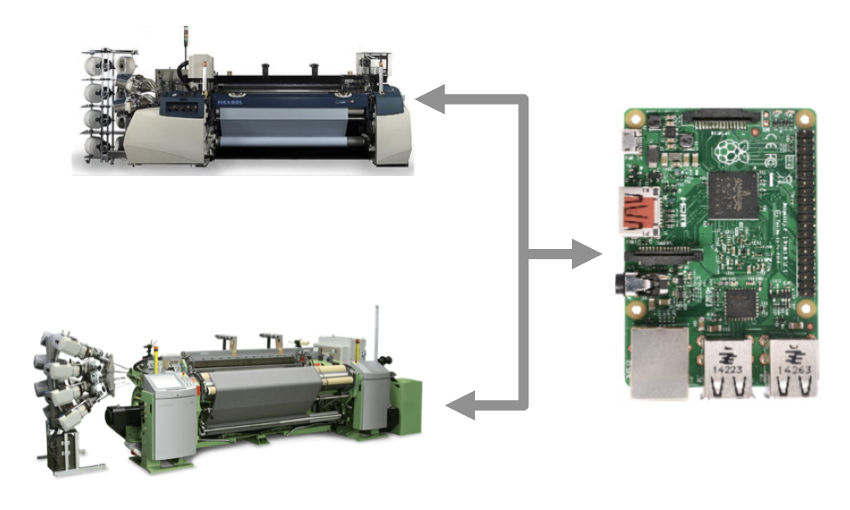
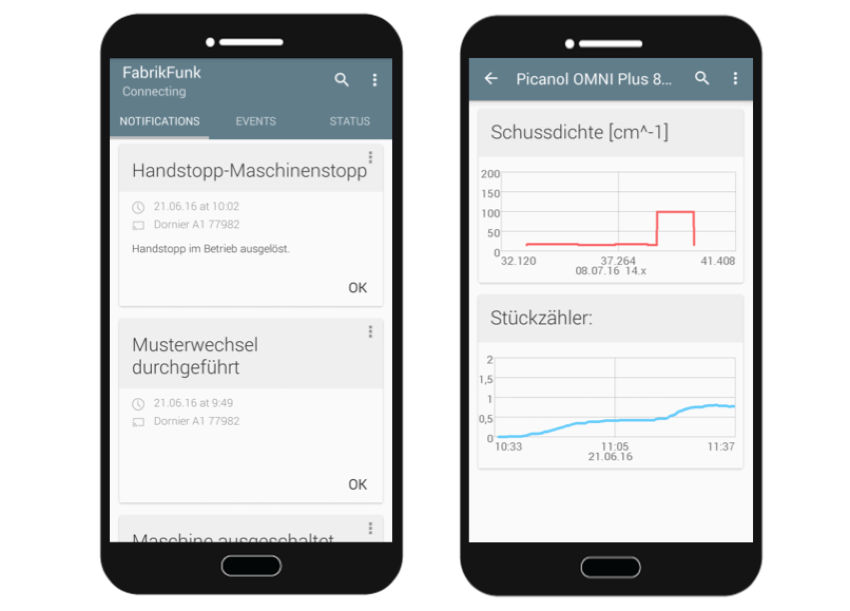
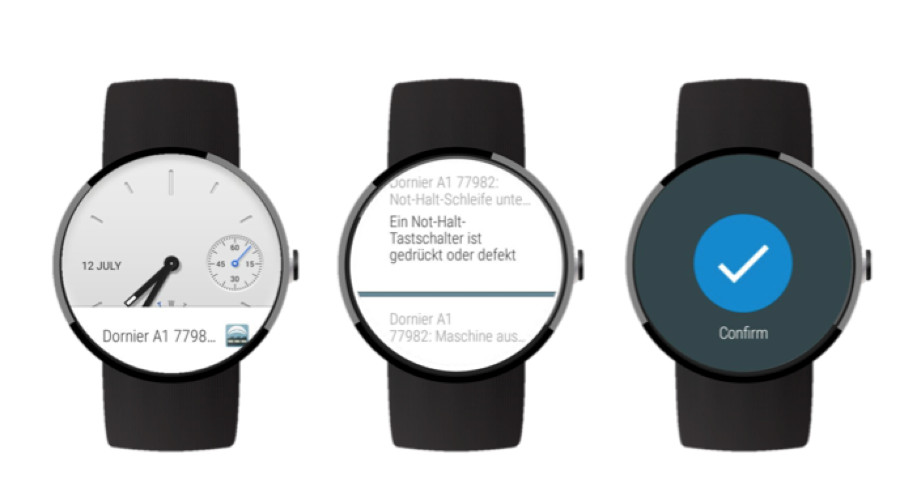

Hi, I'm Julian - below you'll find some posts and a few projects I've been working on.
Feel free to reach out at hijulianvossen.de.
Feel free to reach out at hijulianvossen.de.
Posts
Writing type-safe HTML in Go with htmlgo
March 17, 2019Projects
Stylevinci - A search engine for fashion
Stylevinci.com aggregates clothing items and provides search features powered by deep learning. Users can search for visually similar items while adding other filters, such as price, colour or search terms.
Similarity search - We use a convolutional model to generate a vector representation of each clothing item. Therefore, a search for similar items becomes a nearest neighbour search in the resulting vector space.
The model is trained as a siamese network with the triplet loss and an auxillary classification target.
The model is trained as a siamese network with the triplet loss and an auxillary classification target.
Colour annotation - Using instance segmentation and subsequent clustering, clothing items are automatically annotated with RGB colour values. This enables a precise colour search with an interactive colour picker.
Wishminer - Mining social media for product demands
Wishminer.com is a tool that mines
Twitter and Reddit for people expressing
product demands, mostly apps or websites.
It made it to the front-page of Hacker News and browsing on it can still provide hours of inspirational entertainment during bathroom activities.
It made it to the front-page of Hacker News and browsing on it can still provide hours of inspirational entertainment during bathroom activities.
FabrikFunk - A mobile app for monitoring manufacturing
Assisting machine operators in complex and highly automated production environments, we built a proactive information distribution system for industry 4.0 weaving mills. The system monitors weaving machines and delivers notifications on relevant machine events in real-time to mobile devices carried by the machine operators.

All connected weaving machines are represented by individual agents running on a Raspi. The agents communicate to the machines via TCP/IP.

An agent analyzes all machine data and determines which events are relevant to which operator in order to distribute them accordingly.

Operators receive notifications on smartphones and smart watches and become more effective at monitoring numerous machines at once.